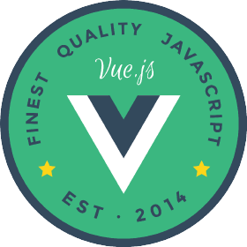

Component
Documentation
made easy
@ElevateBart
Discord, Twitter, Github

 Vue-Styleguidist
Vue-Styleguidist
Storybook

 VueJs Chicago Meetup
VueJs Chicago Meetup
Vue Land 

Dominic
Designer
Sarah
Design System Engineer
Patrick
Final Product Developer

Oh! I don't have time for this either!